Seção instalação de stock rom, Flash, Firmware
Está é uma secção única, ou seja, você não prescisa alternar entre página 1 e página 2 para procurar o que precisa. Assim sua busca será mais rápida e fácil evitando que perca tempo com paginações.
# Olha, se não quiser rolar o mouse até o fundo, basta apenas pressionar a tecla F3 do seu teclado e inserir o modelo do dispositivo para agilizar.
MOTO G XT1069 DSTV

Se por o seu dispositivo entrou em Loop infinito, boot infinito ou simplesmente deseja retornar a versão original do sistema esse é o tutorial certo que você tanto procurava.
MOTO G 4G LTE XT1078
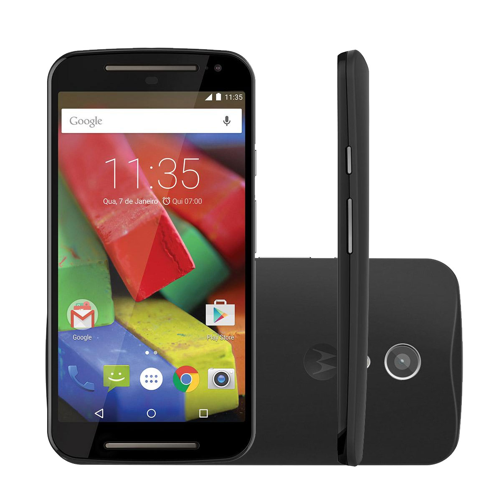Se por o seu dispositivo entrou em Loop infinito, boot infinito ou simplesmente deseja retornar a versão original do sistema esse é o tutorial certo que você tanto procurava.
ASUS Zenfone GO ZB500KG
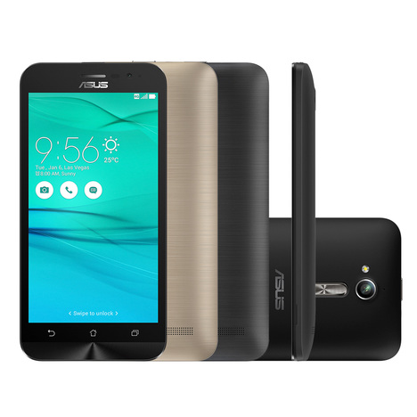Procedimento de reinstalação de firmware, disponivel para o dispositivo "ASUS ZENFONE GO ZB500KG", voltando a versão original do sistema de forma rápida e sem nenhuma complicação.
MOTO G XT1556

Se por o seu dispositivo entrou em Loop infinito, boot infinito ou simplesmente deseja retornar a versão original do sistema esse é o tutorial certo que você tanto procurava.
ASUS Zenfone GO ZB551KL

Procedimento de reinstalação de firmware, disponivel para o dispositivo "ASUS ZENFONE GO ZB551KL", voltando a versão original do sistema de forma rápida e sem nenhuma complicação.
Galaxy FAME DUOS S6812B

Procedimento de reinstalação de firmware, disponivel para o dispositivo Galaxy FAME DUOS S6812B, voltando a versão original do sistema de forma rápida e sem nenhuma complicação. Com isso, problemas como...
Gran Prime Duos G530H

Procedimento de reinstalação de firmware disponivel para dispositivo Gran Prime Duos G530H, voltando a versão base do android.
MOTO E4 PLUS XT1773

Se o seu MOTO E4 PLUS XT1773 está apresentando problemas como boot infinito isto é, ele não inicia, travamentos ou lentidão com esse procedimento...
Galaxy S6 EDGE SM-G925I

Instalar firmware original de fábrica para o Galaxy S6 EDGE. Reinstale de uma vez por todas a versão original do sistema android.
BLU DASH JR D141W

Que tal resolver problemas como travamentos, lentidões, loop-infinito e também se seu dispositivo BLU DASH JR D141W foi infectado com vírus e não para de aparecer propagandas indesejáveis...
MULTILASER MS45S
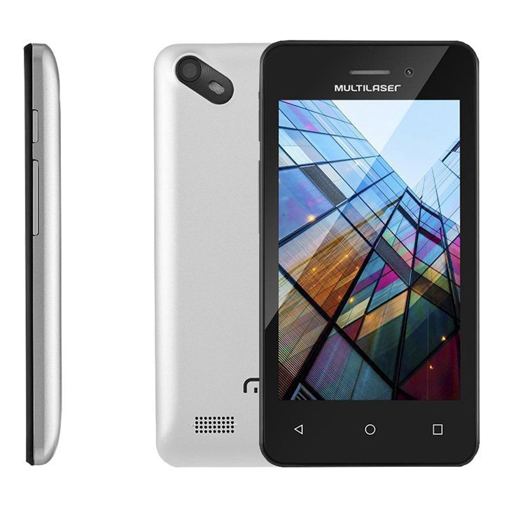Iremos ver como resolver problemas como travamentos, lentidões, loop-infinito e também se seu dispositivo foi infectado com vírus e não para de aparecer propagandas indesejáveis...
Lenovo VIBE B A2016b30
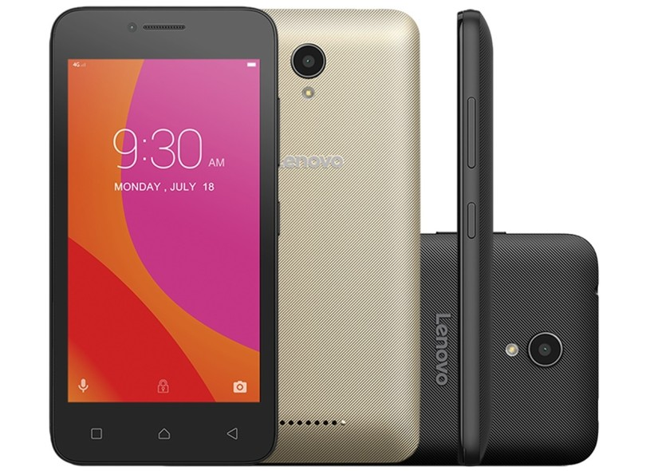Iremos ver como resolver problemas como travamentos, lentidões, loop-infinito e também se seu dispositivo Lenovo VIBE B A2016b30 foi infectado com vírus e não para de aparecer propagandas indesejáveis, lhe importunando toda hora... com esse procedimento além de voltar ao sistema original de Fábrica resolverá esses problemas.
POSITIVO ONE S420
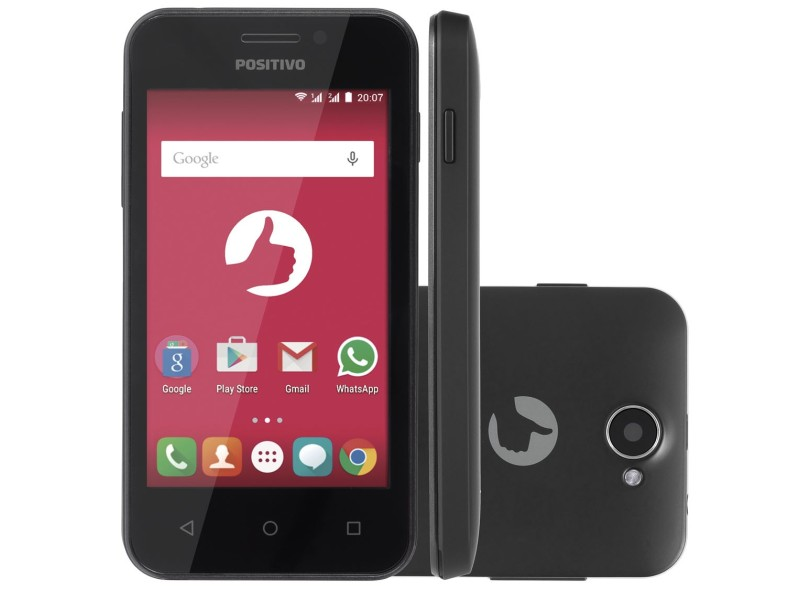Se o seu dispositivo Positivo entrou em Loop ou está apresentando erros como travementos ou erros de memória veja agora como reinstalar a firmware original de fábrica neste dispositivo.
Samsung Galaxy S6 G920L

Instalar firmware original de fábrica para o Galaxy S6. Reinstale de uma vez por todas a versão original do sistema android.
CCE Motion Plus S452 TV
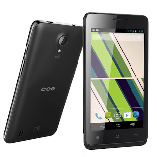Se o seu dispositivo CCE entrou em Loop ou está apresentando erros como travementos ou memória veja como reinstalar a firmware original de fábrica agora.
POSITIVO YPY S450
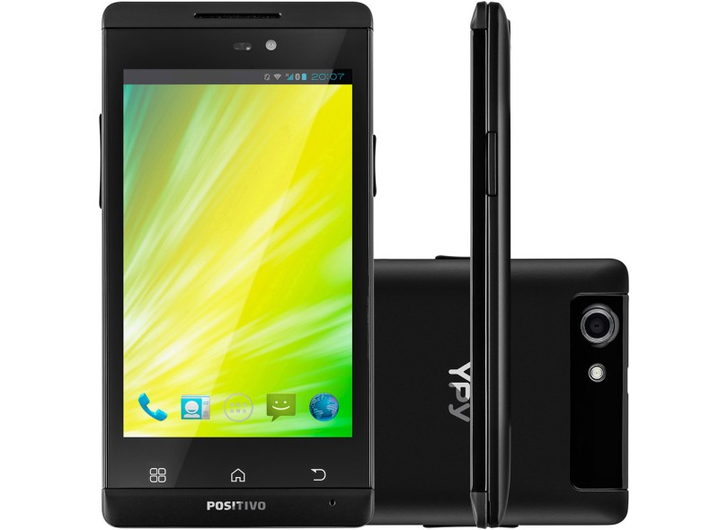Se o seu dispositivo Positivo entrou em Loop ou está apresentando erros como travementos ou erros de memória veja agora como reinstalar a firmware original de fábrica neste dispositivo.
Alcatel POP C7 7040E

Vamos remover o Loop! E ao mesmo tempo resolver problemas como travamentos, lentidões ou se simplesmente seu dispositivo POP C7 foi infectado com vírus e não para de aparecer prop...
Alcatel Pixi 4 (3.5) 4017F

Vamos remover o Loop? ou resolver problemas como travamentos, lentidões ou se simplesmente seu dispositivo Pixi 4 3.5 4017F foi infectado com vírus e não para de aparecer prop...
Samsung S4 I9505

Instalar firmware original de fábrica para o Samsung S4 I9505. Reinstale de uma vez por todas a versão original do sistema android.
Moto E 2 XT1514

Instalar stock rom original de fábrica no Moto E 2 XT1514 para resolver erros como - Loop infinito, boot infinito, erros de memória, travamentos, processo.system parou, reinicios automáticos ou se simplesmente deseja realizar um Downgread para uma versão de sistema anterior.
Samsung J7

Procedimento de reinstalação de firmware disponivel para dispositivo Samsung J7 J700m, voltando a versão base do android.
Samsung Galaxy Express I8730

Instalar firmware original de fábrica para o Galaxy Express. Reinstale de uma vez por todas a versão original do sistema android.
Lg k10

Veja agora como reinstalar a versão de fábrica do lg K10 K430DS e resolver erros como O Processo.System Parou, travamentos, lentidões loop infinito etc.
Galaxy Fame GT-S6810B

Procedimento de reinstalação de firmware disponivel para dispositivo GT-S6810B, voltando a versão base do android.
GALAXY GRAN NEO GT-I9063T

Instalar firmware original de fábrica para o GALAXY GRAN NEO. Reinstale de uma vez por todas a versão original do sistema android.
Blu STUDIO CHD D534U

Se você possui um dispositivo da fabricante BLU sabe que procedimentos como este não é lá uma novidade uma vez em que é nescessário sempre realizar uma reinstalação de stock rom para que os mesmos se libertem do Loop infinito.
Samsung Galaxy Young 2 Duos S6313TTV

Instalar firmware original de fábrica para o s6313t tv. Reinstale de uma vez por todas a versão original do sistema android.
Gran Prime G531BT

Procedimento de reinstalação de firmware disponivel para dispositivo Gran Prime Duos G531BT, voltando a versão base do android.
Moto E

Instalar stock rom original de fábrica no Moto E XT1021 para resolver erros como - Loop infinito, boot infinito, erros de memória, travamentos, processo.system parou, virus, reinicio automático ou se simplesmente deseja realizar um Downgread para uma versão de sistema anterior.
Galaxy J1 Mini 4G J100M

Instalar firmware original de fábrica para o Galaxy J1. Voltando a versão base do android.
LG L65 D285F

Veja agora como reinstalar a versão original de fábrica no Lg L65 d285f e resolver erros como O Processo.System Parou, travamentos, lentidões loop infinito etc.
Samsung Galaxy S2 Lite I9070

Instalar firmware original de fábrica para o S II Lite. Reinstale de uma vez por todas a versão original do sistema android.
LG D107
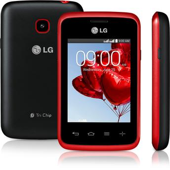Veja agora como reinstalar a versão de fábrica do LG L20 Tri Chip e resolver erros como O Processo.System Parou, travamentos, lentidões loop infinito etc.
Galaxy J1 2016 J120H

Instalar firmware original de fábrica para o Galaxy J1 2016. Voltando a versão base do android.
Galaxy Trend Lite S7392L

Instalar firmware original de fábrica para o Trend Lite. Reinstale de uma vez por todas a versão original do sistema android.
Samsung S3 Mini

Reinstalação de firmware para o dispositivo Galaxy s3 Mini i8200l, voltando a versão base de fábrica e resolvendo diversas falhas no sistema.
Lg L70 D325f

Veja agora como reinstalar a versão de fábrica do Lg L70 D325f e resolver erros como O Processo.System Parou, travamentos, lentidões loop infinito e vários outros.
Moto G XT1033

Instalar stock rom original de fábrica no Moto G XT1033 para resolver erros como - Loop infinito, boot infinito, erros de memória, travamentos e reinicios automáticos ou se simplesmente deseja realizar um Downgread para uma versão de sistema anterior.
Galaxy J7 METAL J710MN

Instalar firmware original de fábrica para o J7 METAL. Reinstale de uma vez por todas a versão original do sistema android.
Samsung J1 Ace J111F

Instalar firmware original de fábrica para o Samsung J1 Ace. Voltando a versão base do android.
LG OPTIMUS L1 E410F

Veja agora como reinstalar a versão original de fábrica no OPTIMUS L1 E410F e resolver erros como O Processo.System Parou, travamentos, lentidões loop infinito etc.
Galaxy S3 MINI GT-I8190L

Reinstalação de firmware para o dispositivo Samsung Galaxy S3, voltando a versão base de fábrica e resolvendo diversas falhas no sistema.
Galaxy Core Prime G360B TV

Reinstalação de firmware para o dispositivo Galaxy Core Prime, voltando a versão original de fábrica e resolvendo diversas falhas no sistema que você poderá visualizar melhor se clicar na imagem do modelo.
Galaxy Ace 4 G313M

Veja agora como reinstalar a versão de fábrica do Ace 4 e resolver erros como O Processo.System Parou, travamentos, lentidões loop infinito etc.
Galaxy Ace 4 Duos G316M

Veja agora como reinstalar a versão de fábrica do Ace 4 Duos e resolver erros como O Processo.System Parou, travamentos, lentidões loop infinito etc.
Samsung J5 J500M

Instalar firmware original de fábrica para o Samsung J5. Resolva erros como Loop-infinito, boot-infinito, virus, root, custom-roms, recovery's personalizadas entre outros.
Blu Studio 5.0 CE D536l

Se você possui um dispositivo da fabricante BLU sabe que procedimentos como este não é lá uma novidade uma vez em que é nescessário sempre realizar uma reinstalação de stock rom para que os mesmos se libertem do Loop infinito.
Samsung J7 Prime

Reinstalação de firmware para o dispositivo J7 Prime G610M, voltando a versão base de fábrica e resolvendo diversas falhas do sistema.
LG Optimus L4 II TV E465F

Veja agora como reinstalar a versão original de fábrica no LG Optimus L4 II TV E465f e resolver problemas como " Processo.System Parou", travamentos, lentidões, loop infinito e também para remover Root e Custom Rom.
LG L80 DUAL D385

Veja agora como reinstalar a versão original de fábrica no Lg L80 Dual e resolver erros como O Processo.System Parou, travamentos, lentidões, loop infinito, root e custom roms.
Moto g 2 XT1069dstv
Instalar stock rom original de fábrica no Moto g 2 XT1069dstv para resolver erros como - Loop infinito, boot infinito, erros de memória, travamentos, processo.system parou, reinicios automáticos ou se simplesmente deseja realizar um Downgread para uma versão de sistema anterior.
LG L35 D157F

Veja agora como reinstalar a versão original de fábrica no LG Optimus L35 D157f e resolver problemas como " Processo.System Parou", travamentos, lentidões, loop infinito e também para remover Root e Custom Rom.
Galaxy Young Plus TV GT-S6293T

Procedimento de reinstalação de firmware disponivel para dispositivo Young Plus TV, voltando a versão base do android.
Gran Prime Duos TV SM-G530BT

Procedimento de reinstalação de firmware, disponivel para o dispositivo Grand Prime DUOS TV, voltando a versão original do sistema de forma rápida e sem nenhuma complicação.
BLU Advance 4.0 L2 A030L
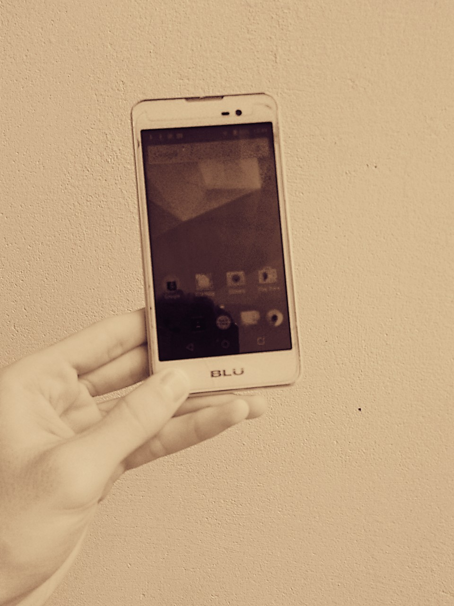Se você possui um dispositivo da fabricante BLU sabe que procedimentos como este não é lá uma novidade uma vez em que é nescessário sempre realizar uma reinstalação da stock rom para que os mesmos se libertem das amarras do Loop infinito.
Moto E 2 XT1506

Instalar stock rom original de fábrica no Moto E 2 XT1506 para resolver erros como - Loop infinito, boot infinito, erros de memória, travamentos, processo.system parou, reinicios automáticos ou se simplesmente deseja realizar um Downgread para uma versão de sistema anterior.
LG K130F K4

Veja agora como reinstalar a versão original de fábrica no LG K130F K4 e resolver problemas como " Processo.System Parou", travamentos, lentidões, loop infinito e também para remover Root e Custom Rom.
LG L PRIME D337

Veja agora como reinstalar a versão original de fábrica no Lg L Prime D337 e resolver problemas como " Processo.System Parou", travamentos, lentidões, loop infinito e também para remover Root e Custom Rom.
Samsung A5 A500

Instalar stock rom original de fábrica no Samsung A5 SM-A500 para resolver erros como - Loop infinito, boot infinito, erros de memória, travamentos, processo.system parou, reinicios automáticos e vários outros.
Samsung A5 2016 A510M

Instalar stock rom original de fábrica no Samsung Galaxy A5 2016 SM-A510M para resolver erros como - Loop infinito, boot infinito, erros de memória, travamentos, processo.system parou, reinicios automáticos e vários outros.
Galaxy S II Duos TV S7273T

Reinstalação de Firmware para o Galaxy s II duos, procedimento para voltar a stock de fábrica e resolver diversos problemas
Moto g 2 XT1068
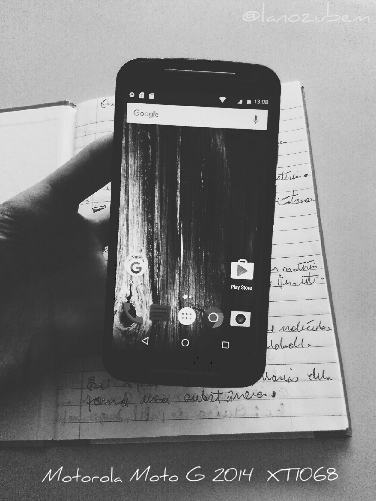Instalar stock rom original de fábrica no Moto g 2 XT1068 para resolver erros como - Loop infinito, boot infinito, erros de memória, travamentos, processo.system parou, reinicios automáticos ou se simplesmente deseja realizar um Downgread para uma versão de sistema anterior.
Alcatel POP C7 7041D
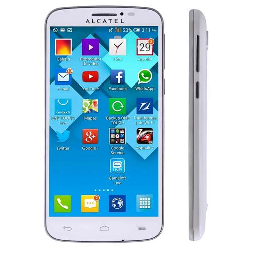Vamos remover o Loop! E ao mesmo tempo resolver problemas como travamentos, lentidões ou se simplesmente seu dispositivo POP C7 foi infectado com vírus e não para de aparecer prop...
Samsung Galaxy J3 J320M

Instalar firmware original de fábrica para o Samsung J3. Resolva erros como Loop-infinito, boot-infinito, virus, root, custom-roms, recovery's personalizadas entre outros.
Samsung ON7 G600FY

Reinstalação de firmware para o dispositivo ON7 SM-G600FY, voltando a versão base de fábrica e resolvendo diversas falhas do sistema.
Blu Studio G D790L

Se você possui um dispositivo da fabricante BLU sabe que procedimentos como este não é lá uma novidade uma vez em que é nescessário sempre realizar uma reinstalação de stock rom para que os mesmos se libertem do Loop infinito.
GALAXY S III DUOS GT-I8262B

Reinstalação de firmware para o dispositivo Galaxy GT-I8262B , voltando a versão original de fábrica e resolvendo diversas falhas no sistema que você poderá visualizar melhor se clicar na imagem do modelo.
Moto G 3 XT1544

Instalar stock rom original de fábrica no Moto G 3 XT1544 para resolver erros como - Loop infinito, boot infinito, erros de memória, travamentos e reinicios automáticos ou se simplesmente deseja realizar um Downgread para uma versão de sistema anterior.
G. Pocket Duos SM-G110B

Reinstalação de firmware para o dispositivo Galaxy Pocket Duos, voltando a versão original de fábrica e resolvendo diversas falhas no sistema que você poderá visualizar melhor se clicar na imagem do modelo.
G. Young 2 Pro G130BU

Reinstalação de firmware para o dispositivo Galaxy Young 2 Pro, voltando a versão original de fábrica e resolvendo diversas falhas no sistema que você poderá visualizar melhor se clicar na imagem do modelo.
G. Young 2 Pro G130M

Reinstalação de firmware para o dispositivo Galaxy Young 2 Duos, voltando a versão original de fábrica e resolvendo diversas falhas no sistema que você poderá visualizar melhor se clicar na imagem do modelo.
Moto g 2 XT1069
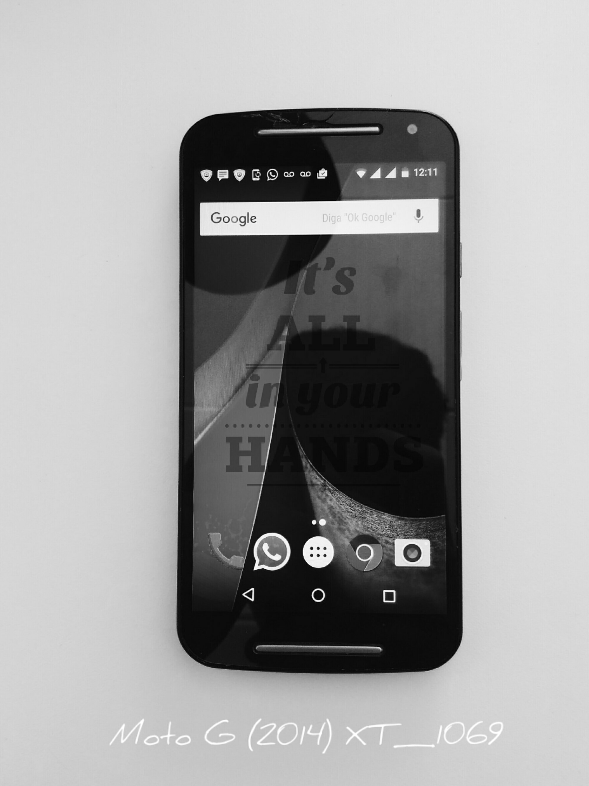Instalar stock rom original de fábrica no Moto g 2 XT1069 para resolver erros como - Loop infinito, boot infinito, erros de memória, travamentos, processo.system parou, reinicios automáticos ou se simplesmente deseja realizar um Downgread para uma versão de sistema anterior.
Lg k8 K350DS

Veja agora como reinstalar a versão de fábrica do lg K8 k350DS e resolver erros como O Processo.System Parou, travamentos, lentidões loop infinito etc.
Moto G 3 XT1543

Instalar stock rom original de fábrica no Moto G 3 XT1543 para resolver erros como - Loop infinito, boot infinito, erros de memória, travamentos e reinicios automáticos ou se simplesmente deseja realizar um Downgread para uma versão de sistema anterior.
ASUS Zenfone 5 a501cg
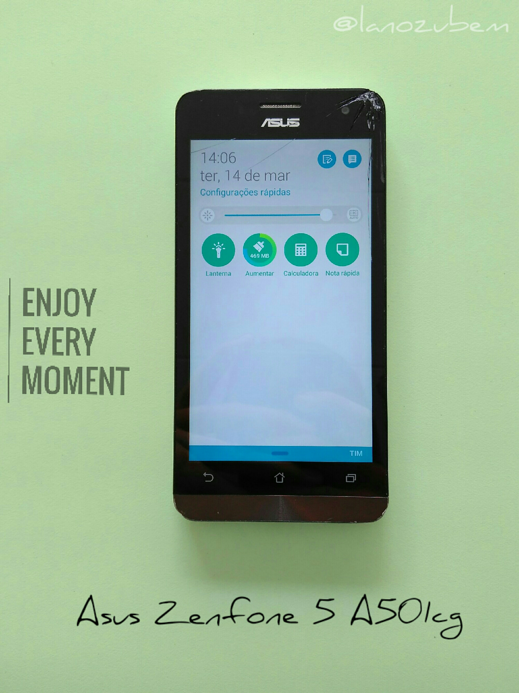Instalar stock rom original de fábrica para o ASUS Zenfone 5 para resolver erros como - Loop infinito, boot infinito, erros de memória, travamentos, processo.system parou, reinicios automáticos ou se simplesmente deseja realizar um Downgread para uma versão de sistema anterior.
Galaxy Core Plus G350

Reinstalação de firmware para o dispositivo Galaxy Core Plus, voltando a versão original de fábrica e resolvendo diversas falhas no sistema que você poderá visualizar melhor se clicar na imagem do modelo.
Blu Advance L A010L

Se você possui um dispositivo da fabricante BLU sabe que procedimentos como este não é lá uma novidade uma vez em que é nescessário sempre realizar uma reinstalação de stock rom para que os mesmos se libertem do Loop infinito.
Galaxy Core 2 Duos G355M

Reinstalação de firmware para o dispositivo Galaxy Core 2 Duos G355M, voltando a versão original de fábrica e resolvendo diversas falhas no sistema que você poderá visualizar melhor se clicar na imagem do modelo.
Samsung S4 I9515L

Instalar firmware original de fábrica para o Samsung S4 I9515L. Reinstale de uma vez por todas a versão original do sistema android.
LG Optimus L5 E615F

Instalar firmware original de fábrica para o Optimus L5 E615F. Reinstale de uma vez por todas a versão original do sistema android.
Blu Dash Jr D192L
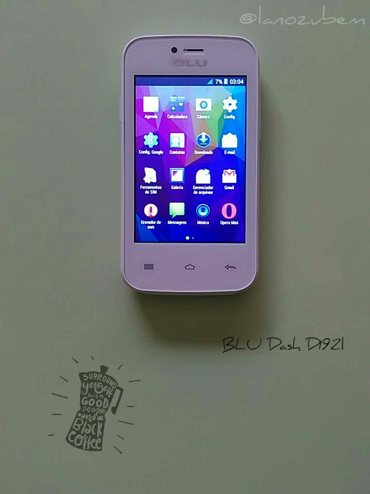Se você possui um dispositivo da fabricante BLU sabe que procedimentos como este não é lá uma novidade uma vez em que é nescessário sempre realizar uma reinstalação de stock rom para que os mesmos se libertem do Loop infinito.
Galaxy S II I9100

Instalar firmware original de fábrica para o Samsung S II I9100. Reinstale de uma vez por todas a versão original do sistema android.
Samsung S4 mini I9192

Instalar firmware original de fábrica para o Samsung S4 mini I9192. Reinstale de uma vez por todas a versão original do sistema android.
Blu STUDIO M HD S110L
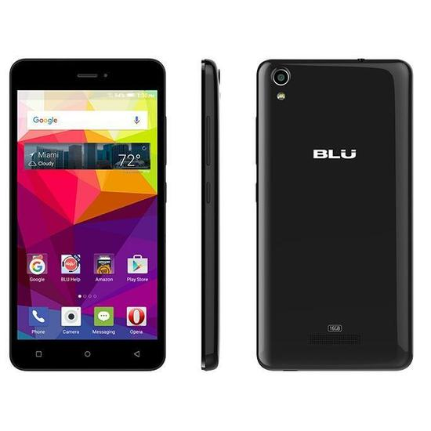Se você possui um dispositivo da fabricante BLU sabe que procedimentos como este não é lá uma novidade uma vez em que é nescessário sempre realizar uma reinstalação de stock rom para que os mesmos se libertem do Loop infinito.
GALAXY S5 MINI G800H

Instalar firmware original de fábrica para o GALAXY S5 MINI G800H. Reinstale de uma vez por todas a versão original do sistema android.
LG Optimus L4 II E467F

Veja agora como reinstalar a versão original de fábrica no LG Optimus L4 II E467f e resolver problemas como " Processo.System Parou", travamentos, lentidões, loop infinito e também para remover Root e Custom Rom.
Galaxy Pocket Plus GT-S5301B

Instalar firmware original de fábrica para o Samsung Galaxy Pocket Plus GT-S5301B. Resolva erros como Loop-infinito, boot-infinito, virus, root, custom-roms, recovery's personalizadas entre outros.
Alcatel PIXI 4 6' 8050E

Vamos remover o Loop! E ao mesmo tempo resolver problemas como travamentos, lentidões ou se simplesmente seu dispositivo PIXI 4 6' foi infectado com vírus e não para de aparecer prop...
Galaxy Pocket Plus GT-S5303B

Instalar firmware original de fábrica para o Samsung Galaxy Pocket Plus GT-S5303B. Resolva erros como Loop-infinito, boot-infinito, virus, root, custom-roms, recovery's personalizadas entre outros.
LG L20 DUAL D105F

Veja agora como reinstalar a versão de fábrica do LG L20 Dual e resolver erros como O Processo.System Parou, travamentos, lentidões loop infinito etc.
Moto E
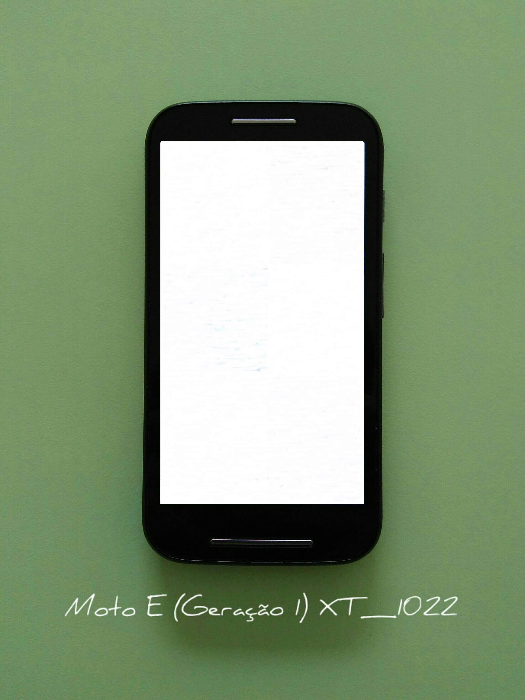Instalar stock rom original de fábrica no Moto E XT1022 para resolver erros como - Loop infinito, boot infinito, erros de memória, travamentos, processo.system parou, virus, reinicio automático ou se simplesmente deseja realizar um Downgread para uma versão de sistema anterior.
Moto E

Instalar stock rom original de fábrica no Moto E XT1025 TV para resolver erros como - Loop infinito, boot infinito, erros de memória, travamentos, processo.system parou, virus, reinicio automático ou se simplesmente deseja realizar um Downgread para uma versão de sistema anterior.
Samsung E5 sm-E500M

Instalar stock rom original de fábrica no Samsung E5 SM-E500M para resolver erros como - Loop infinito, boot infinito, erros de memória, travamentos, processo.system parou, reinicios automáticos e vários outros.
Samsung J1 mini j105b

Instalar firmware original de fábrica para o Samsung J1. Voltando a versão base do android.
Blu dash JR SOCIAL D140S

Processo para reinstalação de stock Original para o dispositivo BLU DASH JR SOCIAL D140S e resolver o problema com o Loop infinito, boot infinito.
Galaxy Pocket Plus Duos GT-S5302B

Instalar firmware original de fábrica para o Samsung Galaxy Pocket Plus Duos GT-S5302B. Resolva erros como Loop-infinito, boot-infinito, virus, root, custom-roms, recovery's personalizadas entre outros.
Samsung Galaxy J2 J200BT

Como Instalar firmware original de fábrica para o Samsung Galaxy J2 J200BT. Voltando a versão original de fábrica.
Galaxy J2 J200M

Como Instalar firmware original de fábrica para o Samsun Galaxy J2. Voltando a versão original de fábrica.
LG G3 D855P

Veja agora como reinstalar a versão de fábrica do LG G3 e resolver erros como O Processo.System Parou, travamentos, lentidões loop infinito etc.
Samsung J2 Prime G532MT

Voltando a versão original de fábrica no Samsung J2 Prime G532MT.
Alcatel POP C1 4015X
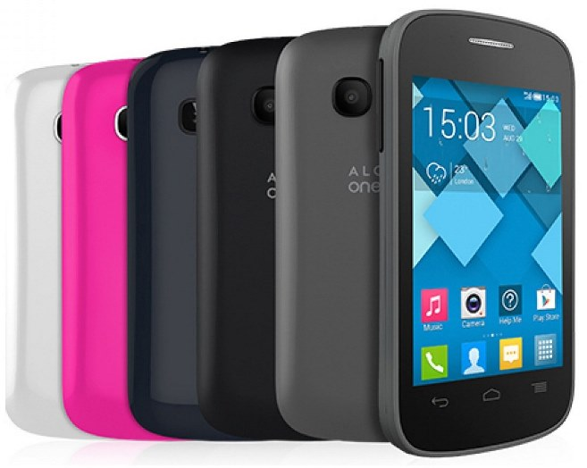Vamos remover o Loop! E ao mesmo tempo resolver problemas como travamentos, lentidões ou se simplesmente seu dispositivo POP C1 foi infectado com vírus e não para de aparecer prop...
Galaxy Grand Duos I9082L

Instalar firmware original de fábrica para o Grand duos. Reinstale de uma vez por todas a versão original do sistema android.
Blu Studio 5.0 C Mini D670L
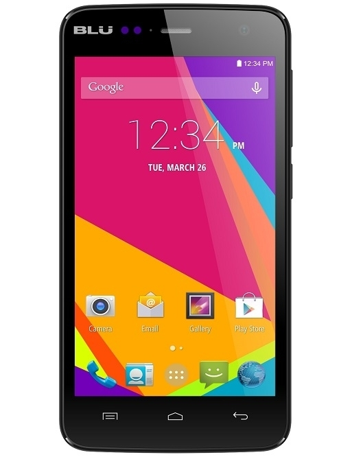Se você possui um dispositivo da fabricante BLU sabe que procedimentos como este não é lá uma novidade uma vez em que é nescessário sempre realizar uma reinstalação de stock rom para que os mesmos se libertem do Loop infinito.
Samsung GALAXY S DUOS GT-S7582L

Instalar firmware original de fábrica para o GALAXY S DUOS. Reinstale de uma vez por todas a versão original do sistema android.
Galaxy S Duos GT-S7562L

Procedimento de reinstalação de firmware, disponivel para o dispositivo Galaxy S Duos GT-S7562L, voltando a versão original do sistema de forma rápida e sem nenhuma complicação.
Galaxy Pocket Neo GT-S5312B

Instalar firmware original de fábrica para o Galaxy Pocket Neo. Reinstale de uma vez por todas a versão original do sistema android.
Galaxy S3 I9300

Veja como realizar a reinstalação de Stock Rom no aparelho Samsung Galaxy s3 I9300 e resolvendo diversos erros no sistema.
Blu dash D190L

Processo para reinstalação de stock Original para o dispositivo BLU DASH JR D190L e resolver o problema com o Loop infinito, boot infinito.
Samsung Galaxy Y S5360B

Instalar firmware original de fábrica para o Samsung Y. Resolva erros como Loop-infinito, boot-infinito, virus, root, custom-roms, recovery's personalizadas entre outros.
Galaxy Y DUOS GT-S6102B

Instalar firmware original de fábrica para o GALAXY Y DUOS. Resolva erros como Loop-infinito, boot-infinito, virus, root, custom-roms, recovery's personalizadas entre outros.
Galaxy J1 MINI SM-J105H

Instalar firmware original de fábrica para o Galaxy J1. Voltando a versão base do android.
Samsung S5 G900MD

Instalar firmware original de fábrica para o Samsung S5 G900MD. Reinstale de uma vez por todas a versão original do sistema android.
LG L40 D175F

Veja agora como reinstalar a versão original de fábrica no LG L40 D175F e resolver problemas como " Processo.System Parou", travamentos, lentidões, loop infinito e também para remover Root e Custom Rom.
Gran Prime VE G531H

Procedimento de reinstalação de firmware disponivel para dispositivo Gran Prime VE G531H, voltando a versão base do android.
LG Optimus L3 E405F

Veja agora como reinstalar a versão original de fábrica no LG Optimus L3 E405f e resolver problemas como " Processo.System Parou", travamentos, lentidões, loop infinito e também para remover Root e Custom Rom.
Gran Prime G531M

Procedimento de reinstalação de firmware disponivel para dispositivo Gran Prime G531M, voltando a versão base do android.
Lg k8 K350DS
Veja agora como reinstalar a versão de fábrica do LG K8 K350DS e resolver erros como O Processo.System Parou, travamentos, lentidões loop infinito etc.
Galaxy S3 NEO I9300L

Veja como realizar a reinstalação de Stock Rom no aparelho Samsung Galaxy S3 NEO I9300L e resolvendo diversos erros no sistema.
Galaxy J1 Prime J106H

Procedimento de reinstalação de firmware disponivel para dispositivo Galaxy J1 PRIME SM-J106H, voltando a versão base do android.
Galaxy Ace 4 Neo G318ML

Veja agora como reinstalar a versão de fábrica do Ace 4 Neo e resolver erros como O Processo.System Parou, travamentos, lentidões loop infinito etc.
Galaxy Core PLus G3502L

Instalar firmware original de fábrica para o Galaxy Core Plus. Reinstale de uma vez por todas a versão original do sistema android.
Galaxy Core PLus Duos G3502T

Instalar firmware original de fábrica para o Galaxy Core Plus Duos TV. Reinstale de uma vez por todas a versão original do sistema android.
LG Pro Lite Dual D685

Veja agora como reinstalar a versão de fábrica do LG PRO LITE DUAL e resolver erros como O Processo.System Parou, travamentos, lentidões loop infinito etc.
Galaxy Win Pro Duos G3812B

Instalar firmware original de fábrica para o Galaxy Win Pro Duos. Reinstale de uma vez por todas a versão original do sistema android.
Galaxy Young TV S5367B

Procedimento de reinstalação de firmware disponivel para dispositivo Galaxy Y TV, voltando a versão base do android.
LG Optimus L4 II Tri Chip E470F

Veja agora como reinstalar a versão original de fábrica no LG Optimus L4 II Tri Chip e resolver problemas como " Processo.System Parou", travamentos, lentidões, loop infinito e também para remover Root e Custom Rom.
Galaxy Ace s5830c

Instalar firmware original de fábrica para o Galaxy Ace s5830c. Reinstale de uma vez por todas a versão original do sistema android.
Samsung S4 MINI LTE I9195

Instalar firmware original de fábrica para o Samsung S4 MINI LTE I9195. Reinstale de uma vez por todas a versão original do sistema android.
LG L3 II E435F
Veja agora como reinstalar a versão original de fábrica no LG L3 II E435F e resolver problemas como " Processo.System Parou", travamentos, lentidões, loop infinito e também para remover Root e Custom Rom.
Galaxy Star trios GT-S5283b

Procedimento de reinstalação de firmware disponivel para dispositivo Samsung Galaxy Star trios GT-S5283b, voltando a versão base do android.
LG L90 D410

Veja agora como reinstalar a versão original de fábrica do L90 e resolver erros como O Processo.System Parou, travamentos, lentidões, loop infinito, root e custom roms.
Galaxy J1 Mini J100F

Instalar firmware original de fábrica para o Galaxy J1 MINI J100F. Voltando a versão base do android.
Galaxy J1 ACE J110L

Instalar firmware original de fábrica para o Galaxy J1 ACE. Voltando a versão base do android.
Galaxy Fame Lite Duos GT-S6792L

Procedimento de reinstalação de firmware, disponivel para o dispositivo Galaxy Pocket Duos SM-G110B, voltando a versão original do sistema de forma rápida e sem nenhuma complicação ...
Samsung Galaxy A3 2016 A310M

Instalar firmware original de fábrica para o Galaxy A3 2016 . Reinstale de uma vez por todas a versão original do sistema android.
Galaxy WIN Duos GT-I8552B

Instalar firmware original de fábrica para o Galaxy Win Duos. Reinstale de uma vez por todas a versão original do sistema android.
@lanozubem